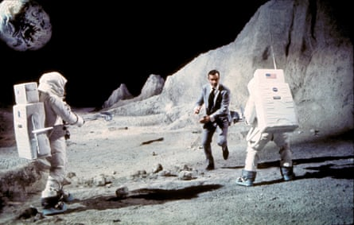

It took 400,000 Nasa employees and contractors to put Neil Armstrong and Buzz Aldrin on the moon in 1969 – but only one man to spread the idea that it was all a hoax. His name was Bill Kaysing.
It began as “a hunch, an intuition”, before turning into “a true conviction” – that the US lacked the technical prowess to make it to the moon (or, at least, to the moon and back). Kaysing had actually contributed to the US space programme, albeit tenuously: between 1956 and 1963, he was an employee of Rocketdyne, a company that helped to design the Saturn V rocket engines. In 1976, he self-published a pamphlet called We Never Went to the Moon: America’s Thirty Billion Dollar Swindle, which sought evidence for his conviction by means of grainy photocopies and ludicrous theories. Yet somehow he established a few perennials that are kept alive to this day in Hollywood movies and Fox News documentaries, Reddit forums and YouTube channels.
Despite the extraordinary volume of evidence (including 382kg of moon rock collected across six missions; corroboration from Russia, Japan and China; and images from the Nasa Lunar Reconnaissance Orbiter showing the tracks made by the astronauts in the moondust), belief in the moon-hoax conspiracy has blossomed since 1969. Among 9/11 truthers, anti-vaxxers, chemtrailers, flat-Earthers, Holocaust deniers and Sandy Hook conspiracists, the idea that the moon landings were faked isn’t even a source of anger any more – it is just a given fact.
The podcast kingpin Joe Rogan is among the doubters. So too is the YouTuber Shane Dawson. A sociology professor in New Jersey was exposed last year for telling his students the landings were fake. While Kaysing relied on photocopied samizdat to alert the world, now conspiracists have the subreddit r/moonhoax to document how Nasa was “so lazy” it used the same moon rover for Apollo 15, 16 and 17; or how “they have been trolling us for years”; or to bring up the fact there is “one thing I can’t get my head around ...”
“The reality is, the internet has made it possible for people to say whatever the hell they like to a broader number of people than ever before,” sighs Roger Launius, a former chief historian of Nasa. “And the truth is, Americans love conspiracy theories. Every time something big happens, somebody has a counter-explanation.”
Bill Kaysing, the man who started the moon-hoax conspiracy.Photograph: www.billkaysing.com
It turns out British people love conspiracy theories, too. Last year, the daytime TV show This Morning welcomed a guest who argued that no one could have walked on the moon as the moon is made of light. Martin Kenny claimed: “In the past, you saw the moon landings and there was no way to check any of it. Now, in the age of technology, a lot of young people are now investigating for themselves.” A recent YouGov poll found that one in six British people agreed with the statement: “The moon landings were staged.” Four per cent believed the hoax theory was “definitely true”, 12% that it was “probably true”, with a further 9% registering as don’t knows. Moon hoaxism was more prevalent among the young: 21 % of 24- to 35-year-olds agreed that the moon landings were staged, compared with 13% of over-55s.
Kaysing’s original queries are fuelling this. One is the fact that no stars are visible in the pictures; another is the lack of a blast crater under the landing module; a third is to do with the way the shadows fall. People who know what they are talking about have wasted hours explaining such “anomalies” (they are to do with, respectively, camera-exposure times, the way thrust works in a vacuum and the reflective qualities of moondust). Yet until his death in 2005, Kaysing maintained that the whole thing was a fraud, filmed in a TV studio. “It’s well documented that Nasa was often badly managed and had poor quality control,” he told Wired in 1994. “But as of 1969, we could suddenly perform manned flight upon manned flight? With complete success? It’s just against all statistical odds.”
He was right about that at least. When the Soviets launched Sputnik 1 in October 1957 (followed one month later by Sputnik 2, containing Laika the dog), the US space programme was all but non-existent. Nasa was founded in 1958 and managed to launch Alan Shepard into space in May 1961 – but when John F Kennedy announced that the US “should commit itself to achieve the goal, before this decade is out, of landing a man on the moon and returning him safely to the Earth”, it seemed a stretch. By the mid-60s, Nasa was consuming more than 4% of the US federal budget, but while the Soviets were achieving more firsts – the first woman in space (1963), the first extra-vehicular activity, ie spacewalk (1965) – the Americans experienced various setbacks, including a launchpad fire that killed all three Apollo 1 astronauts.
If you have ever been to the Science Museum in London, you will know that the lunar module was basically made of tinfoil. Apollo 8 had orbited the moon in 1968 , but, as Armstrong remarked, correcting course and landing on the moon was “far and away the most complex part of the flight”. He rated walking around on the surface one out of 10 for difficulty (despite the problems he had with the TV cable wrapping around his feet), “but I thought the lunar descent was probably a 13”.
That is until you compare it with the difficulty of maintaining a lie to the entire world for five decades without a single slip from any Nasa employee. You would also have to imagine that 2019-era special effects were available to Nasa in 1969 and not one of the 600 million TV viewers noticed anything amiss. Stanley Kubrick’s 2001: A Space Odyssey (1968) is a decent indication of what Hollywood special effects could do at the time – and it’s extremely shonky. It genuinely was simpler to film on location.
If we pass over “World war two bomber found on moon” – a Sunday Sport front page from 1988 – the moon-hoax theory entered the modern era in 2001, when Fox News broadcast a documentary called Did We Land on the Moon? Hosted by the X-Files actor Mitch Pileggi, it repackaged Kaysing’s arguments for a new audience. Launius, who was working at Nasa at the time, recalls much banging of heads against consoles. “For many years, we refused to respond to this stuff. It wasn’t worth giving it a hearing. But when Fox News aired that so-called documentary – stating unequivocally ‘We haven’t landed on the moon’ – it really raised the level. We began to receive all kinds of questions.”
Most of the calls came not from conspiracists, but from parents and teachers. “People were saying: ‘My kid saw this, how do I respond?’ So, with some trepidation, Nasa put up a webpage and sent out some materials to teachers.”
A particular bugbear in the Fox News documentary was a poll claiming that 20% of Americans believed the moon landing was faked. Launius says that polls tend to put the figure at between 4% and 5%, but it’s easy to phrase poll questions to achieve a more eye-catching result. “Every time there’s a hearing in a serious periodical – even an offhand comment in a movie – it just seeds this stuff.” He cites a scene in Christopher Nolan’s Interstellar (2014) in which a schoolteacher informs Matthew McConaughey’s character that the moon landings were hoaxed in order to win the propaganda war against the Soviet Union. “It’s a throwaway in the film. But it really did churn up a big response.”
Oliver Morton, the author of The Moon: A History for the Future, believes the persistence of the moon hoax isn’t surprising. Given an implausible event for which there is lots of evidence (Apollo 11) and a plausible event for which there is zero evidence (the moon hoax), some people will opt for the latter. “The point of Apollo was to show how powerful the American government was in terms of actually doing things,” he says. “The point of moon-hoax theory is to show how powerful the American government was in terms of making people believe things that weren’t true.” But the hoax narrative was only really possible as Apollo never led anywhere – there were no further missions after 1972. “As the American mind turns back to paranoia in the 1970s, it becomes more pleasing to believe in this,” he says.
Bond’s to blame ... Sean Connery in Diamonds Are Forever.Photograph: Allstar/UNITED ARTISTS
James Bond has to take a small share of the blame. In Diamonds Are Forever (1971), Sean Connery busts into a Nasa facility by way of a Las Vegas casino. A chase ensues across a film set dressed up to look like the moon, complete with earthbound astronauts. But here it’s more like a visual joke, a way of justifying a moon buggy chase across the Nevada desert. By the time of Peter Hyams’ Kaysingian conspiracy thriller Capricorn One (1978), the idea that the government was fooling everyone was no laughing matter. Here it’s about a Mars mission that goes wrong. The authorities opt to fake it and kill the astronauts (one of whom is played by OJ Simpson) to prevent them revealing the truth. In the post-Watergate era, the idea that the government could lie on this scale had become much more plausible.
Apollo marked a turning point between the optimism of the 60s and the disappointments of the 70s. “We can put a man on the moon so why can’t we do X?” became a common refrain. As Morton says: “Yes, the government can set itself an extraordinary goal and go on to achieve it, but that doesn’t mean it can win the war in Vietnam, or clean up the inner cities, or cure cancer or any of the things that Americans might have actually wanted more. The idea that the government isn’t really powerful, it just pretends it is – you can see how it feeds into the moon hoax.”
Moon-hoax theories tend to be about what didn’t happen rather than what did. Conspiracists are divided on whether the earlier Apollo, Mercury, Gemini and Atlas missions were also fakes, whether Laika or Yuri Gagarin ever made it into space, and what role Kubrick played. But while the first generation of lunar conspiracists were motivated by anger, these days it’s more likely to be boredom. The line between conspiracy and entertainment is far more blurry.
Still, while irritating for those involved – Buzz Aldrin punched moon conspiracist Bart Sibrel in 2002 – in one sense the conspiracy idea is harmless, at least compared with misinformation about vaccinations or mass murders. Morton notes that it is one of the few conspiracy theories that isn’t tainted by antisemitism. Nor does it seem to be one to which Donald Trump, the ultimate product of news-as-entertainment, subscribes. The dynamics of the modern internet have clearly not helped: look up Apollo videos on YouTube and before long moon-hoax documentaries start lining up in the autoplay queue. But there is little evidence that Russian disinformation agents have spread moon conspiracies as they have anti-vaxxing propaganda, for example . Although, if you think about it, it would make perfect sense for them to do so: a neat way of restoring Russian prestige while establishing continuity between the cold war and the information wars.
Then again, the USSR had the means to expose the Americans at the time; it was listening in. “We were there at Soviet military base 32103,” the Russian cosmonaut Alexei Leonov recently recalled. “I swear to God we sat there with our fingers crossed. We hoped the guys would make it. We wanted this to happen. We knew those who were on board and they knew us, too.”
The growing strength of the hoax theory is “one of the things that happens as time recedes and these events are lost”, laments Launius. “We’ve seen it with the second world war and the Holocaust. A lot of the witnesses are passing from the scene and it’s easy for people to deny that it took place. Who is left to counteract things that are untrue? Mythologies develop and become the dominant theme.”
Perhaps the hardest thing to believe in is the idea that humans might have accomplished something transcendent – something that even brought out the best in Nixon. “Because of what you have done, the heavens have become part of man’s world,” he said in his telephone call to Aldrin and Armstrong on the moon. “And as you talk to us from the Sea of Tranquility, it inspires us to redouble our efforts to bring peace and tranquility to Earth.”
We have less faith in ourselves these days. Most moon conspiracists treat the whole thing as a joke, a rabbit hole to go down from time to time. Perhaps if Nasa returns to the moon – possibly as early as 2024, depending on Trump’s whims – it will be replaced in time by Mars conspiracies .
Still, you could see the persistence of the moon conspiracy as a compliment to the Apollo scientists. “In a way, the moon hoaxers are taking the Apollo missions far more seriously than most people do,” says Morton. “It’s a sign that they really care. They think that Apollo really mattered.” The truth is that the moon landings didn’t really change life on Earth . Not yet anyway.